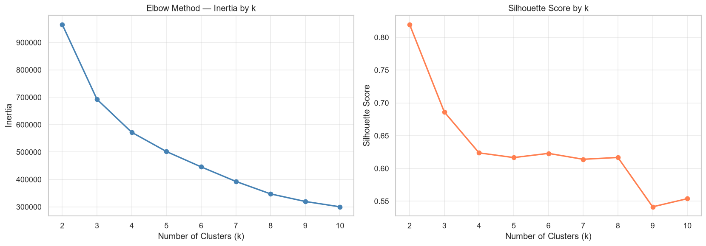
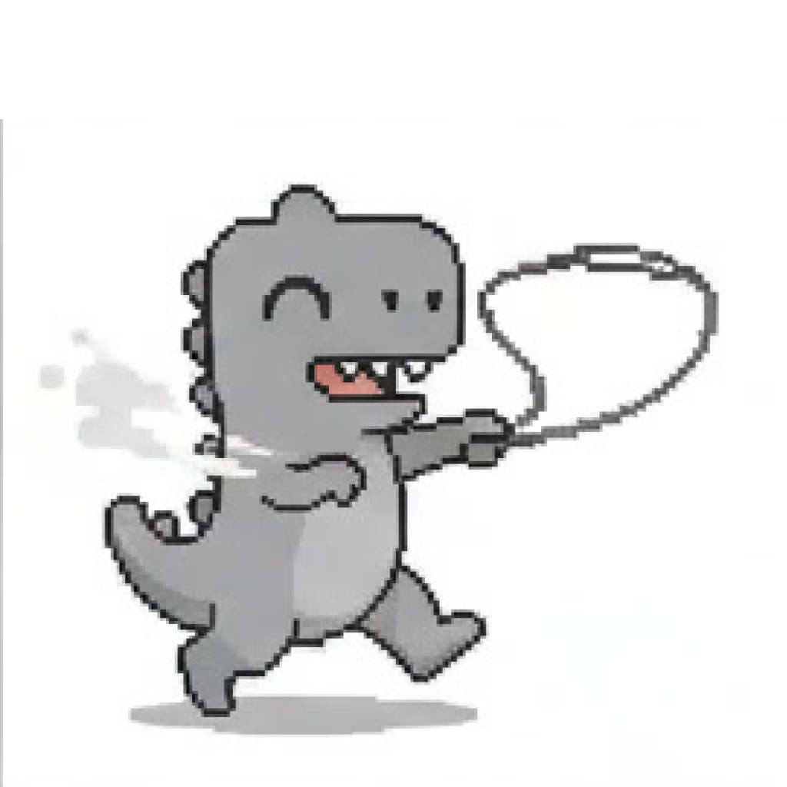
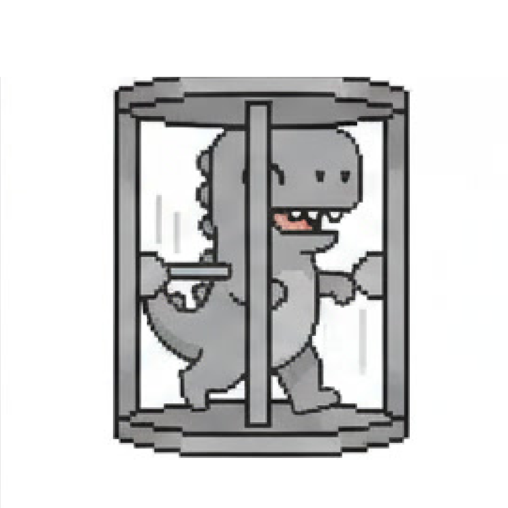
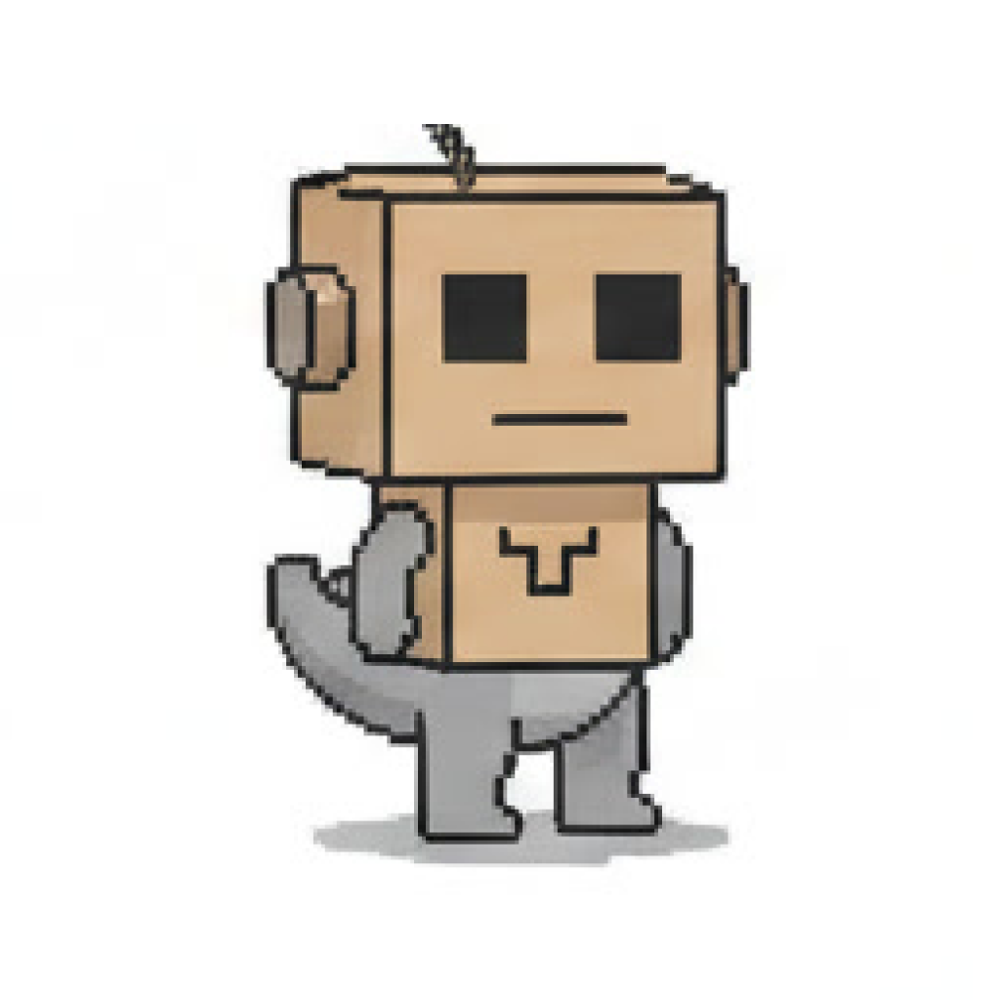

For my capstone project in Data Analytics I analyzed 270,154 Google Merchandise Store users through raw GA4 event data. The project started as a team pitch for behavioral data-driven personas with a real company, and became solo segmentation once that data access fell through.
The project started with a systematic outreach campaign: 37 companies across Cologne, Germany, and NRW's digital industry, screened first for legal and data-compliance risk, then contacted on two channels, LinkedIn and email, offering a free analysis and dashboard for real user data.
One company got furthest, real interest, a good call, before its contract stopped everything cold: no sharing tracking data with third parties, not even anonymized. A second backed off the same way, after I raised data-protection concerns with them myself, before they'd asked. Neither was a rejection. Neither left me with real user data.
I could have kept calling this "personas." I didn't, because quantitative data alone couldn't carry that claim. Without a qualitative data layer I scoped it down to segmentation instead.
Three fallback datasets were lined up in advance. UC Irvine's Online Retail II had the cleanest license but no browsing data, no funnel. REES46 had full event data but capped out at transactional RFM segmentation. The Google Merchandise Store's public GA4 sample was the only one with a complete behavioral funnel, worth the extra BigQuery setup.
It's pre-anonymized for the same reason both companies had backed away: user privacy, one of the real takeaways here. A real partner's data would have kept a qualitative layer possible. A pseudonymized public sample closes that door outright. From there, the work became solo, and personas became segmentation.
Six behavioral features fed the model: session count, page views, items viewed, add-to-cart, checkouts, and purchases, each log-transformed and standardized. The two standard validation metrics couldn't agree with each other. The Elbow Method flattens out with no sharp bend after k=3. The Silhouette Score peaks at k=2, not k=4. I chose k=4 anyway, for interpretability and business-relevant differentiation, and documented that disagreement openly instead of quietly picking the number that told a better story.

Queried the raw GA4 event stream in BigQuery and caught an inherited filter excluding 92.3% of users before modeling began.
Six behavioral features, log1p-transformed and scaled, k-means at k=4.
Named the disagreement between Elbow and Silhouette openly instead of letting one metric quietly decide.
Broke the dominant 81% Browser cluster apart with a rule-based layer to test whether k-means had smoothed over real structure.
This is the artifact, not the verdict. Explore the four behavioral segments below, exactly as they came out of the clustering pipeline. Whether they hold up as "meaningful and defensible" is the question the next section actually answers.
Browser is 81.1% of the whole dataset, by far the largest of the four segments. A cluster that dominant is worth a second pass: is it really one behavioral group, or did k=4 flatten real structure underneath it? I ran a rule-based classification on session-level engagement signals to find out.



"Crawler-like" is a behavioral heuristic, single session, multiple pages, zero measured engagement time, not a verified bot flag. GA4 already excludes known bots and spiders at collection time. This is a descriptive classification, not a validated typology, the same honesty standard the rest of this project holds to.
Zooming back out to the four segments from the dashboard, not the Browser sub-types above: three checks, one holds up, one turns into something more useful, one is a real limit.
Browser and Explorer share the same devices and traffic. Explorer just spends roughly 13 times longer engaged. This is not a convenient cut in the data. This is a real behavioural difference.
Explorer and Engaged Non-Converter look like separate audiences until you find where they actually drop off: at the step from Shipping Info to Payment Info. There, retention is 13.6% and 27.6%, respectively. Fix that one step and both segments will improve at once.
The dataset only ever covered three months, November through January, holiday season by design. That was known going in. What wasn't known was how much moves inside that window: Converter share nearly halves (2.5% down to 0.9%), and site-wide conversion falls with it by about 60%. Exactly the kind of instability a holiday-season model should surface, and exactly why calling this a stable user typology would overstate it.
One holds. One becomes a solution. One confirms this was always a holiday-season read. That's what checking "defensible" actually gets you: not a clean pass, but a more honest map.
Yes, and the three checks above are why. One segment boundary turned out genuinely solid (Browser vs. Explorer). One looked solid but wasn't (the shared checkout-friction point). And the whole segmentation confirmed what the three-month window always implied: a holiday-season read, not a stable typology. If I'd called these "personas" instead of "segments," every one of those caveats would have been a false promise instead of an honest footnote.
The most useful part of this project wasn't the clustering — it was documenting exactly where it stops being trustworthy. k=4 tells a cleaner story than k=2, but the Silhouette Score doesn't agree, and saying that out loud felt riskier than burying it in an appendix. It wasn't: the methodological critique became the strongest part of the deliverable, not the weakest.
Getting back to the original goal — actual personas — needs the qualitative layer this project never had: interviews, context, the "why." HDBSCAN could still sharpen the segments themselves, given how unevenly dense the data is (81% in one cluster), but that's a better clustering, not a persona. The honest path from here runs through user research, not more modeling.